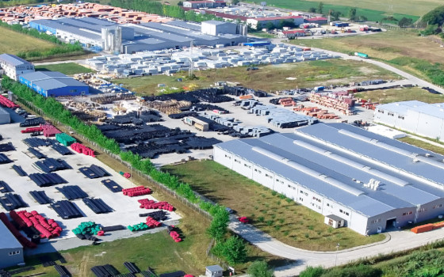
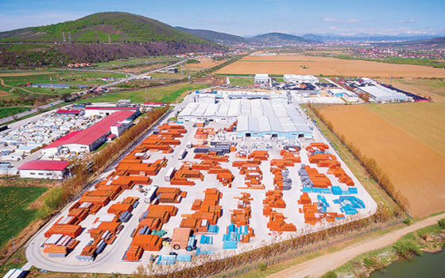

Știați că 1 din 10 facturi de transport conține o eroare?
Nu este o opinie personală, ci o constatare a marilor firme de audit logistic la nivel mondial (precum Gartner sau EY). Datele arată că între 5% și 10% din facturile de transport industrial conțin erori de facturare. Într-o structură industrială de anvergură, unde volumele de transport sunt constante, aceste erori se acumulează silențios, afectând direct profitabilitatea netă.
De ce apar aceste erori în companiile mari?
Standardul de eroare
În medie, o factură din zece este procesată greșit din cauza indicilor de motorină fluctuanți, a zonelor logistice sau a rapoartelor de greutate volumetrică.
Limitările sistemelor ERP
Majoritatea sistemelor informatice sunt excelente pentru contabilitate generală, dar nu sunt proiectate să auditeze automat conformitatea tarifară a fiecărui transport în timp real.
Recuperarea capitalului de lucru
Pentru companiile cu cifre de afaceri de sute de milioane de RON, identificarea și corectarea acestor erori reprezintă o injecție imediată de lichidități, fără a schimba transportatorul sau procesele de producție.
Abordarea LogiCheck:
Suntem mesagerul datelor dumneavoastră
Eu nu vin să propun o schimbare de strategie, ci un instrument de verificare a conformității.
Rolul meu este să extrag adevărul din cifrele pe care deja le aveți:
Analiză de precizie
Comparăm datele brute din facturi cu contractele semnate, fără a perturba activitatea echipei dumneavoastră.

Transparență totală
Dacă cifrele sunt corecte, aveți confirmarea documentată a eficienței departamentului logistic. Dacă există erori, vă oferim dosarul complet pentru recuperarea sumelor plătițe în plus.
Parteneriat Local
Suntem prezenți aici, în Bistrița, pentru a oferi suport direct și confidențialitate maximă partenerilor noștri industriali

Control Continuu
După auditul inițial, soluția noastră monitorizează automat fiecare factură viitoare, asigurând respectarea strictă a contractelor pe termen lung.